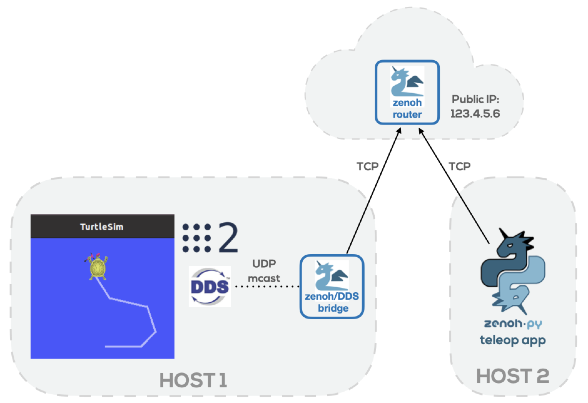
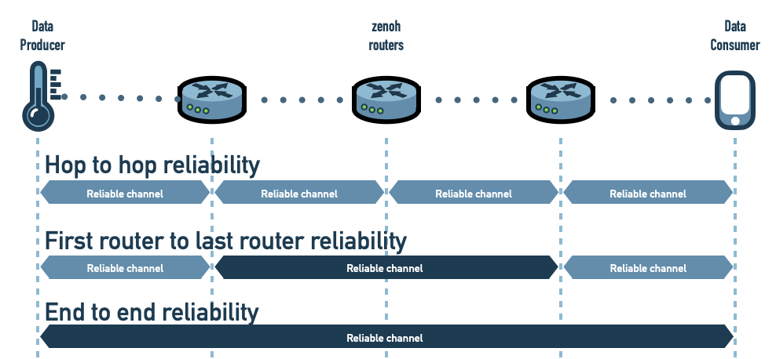

-
Zenoh
- Zenoh has been designed to address the needs of those applications that need to deal with data in movement, data at rest and computation in a scalable, efficient and location transparent data manner.
- JS Try it
-
Zenoh-flow
- zenoh-flow aims at providing a zenoh-based data-flow programming framework for computations that span from the cloud to the device.
- JS Try it